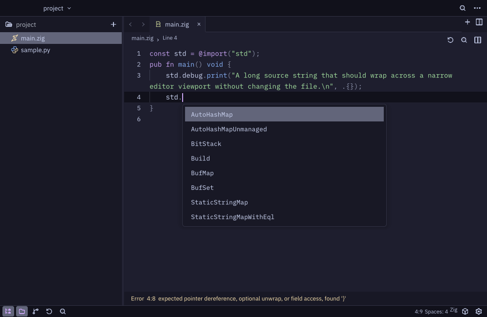
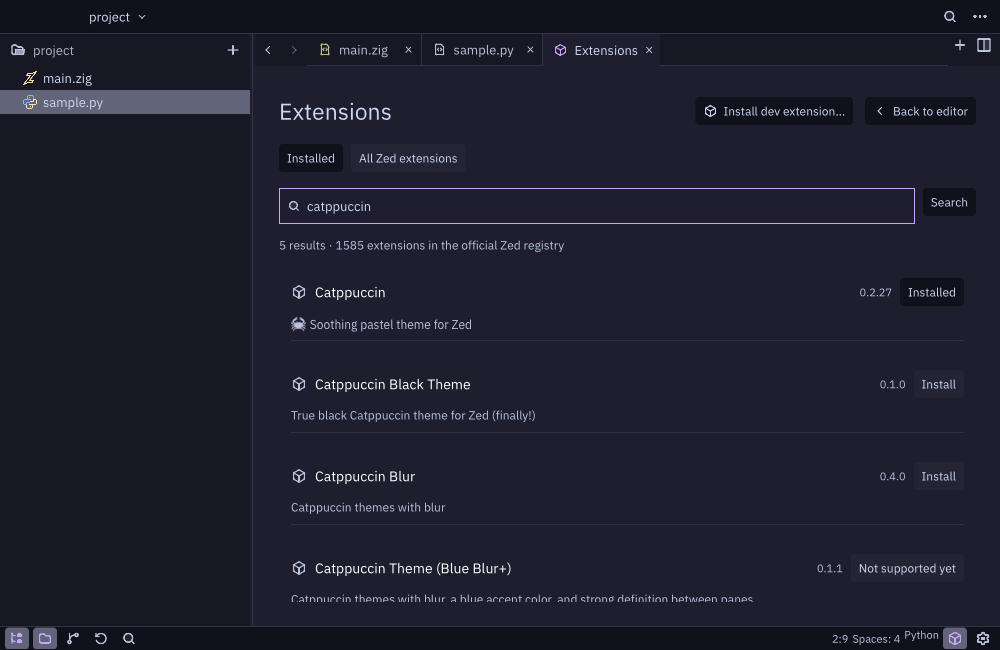
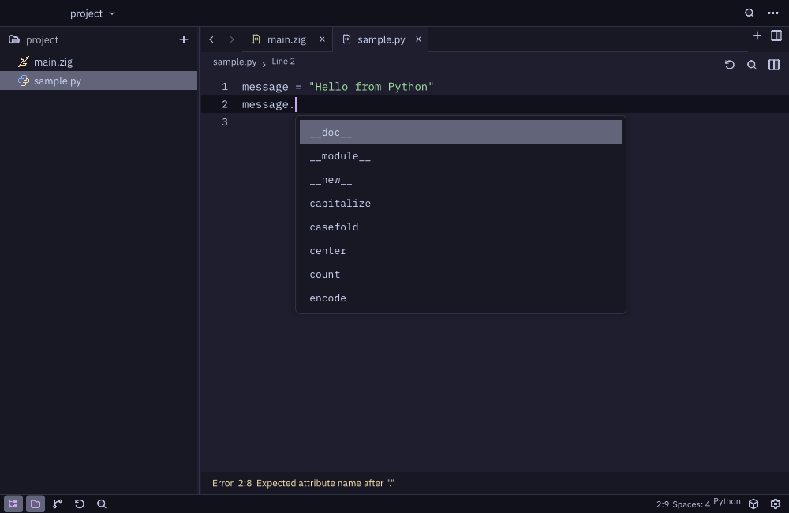
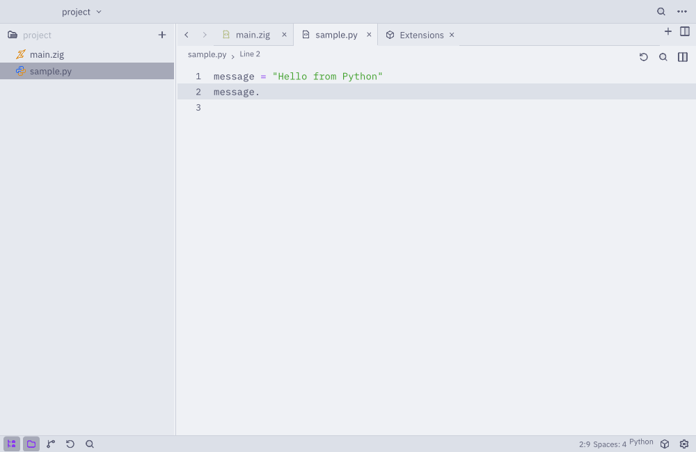

Official Zig grammar and ZLS. The source wraps without adding file line endings.

Search results come from the official registry. Install/update actions use managed packages.

Python Tree-sitter highlighting and a real Pyright server, installed through the common-language provider.

Imported Catppuccin Latte colors and file icons in the native editor.